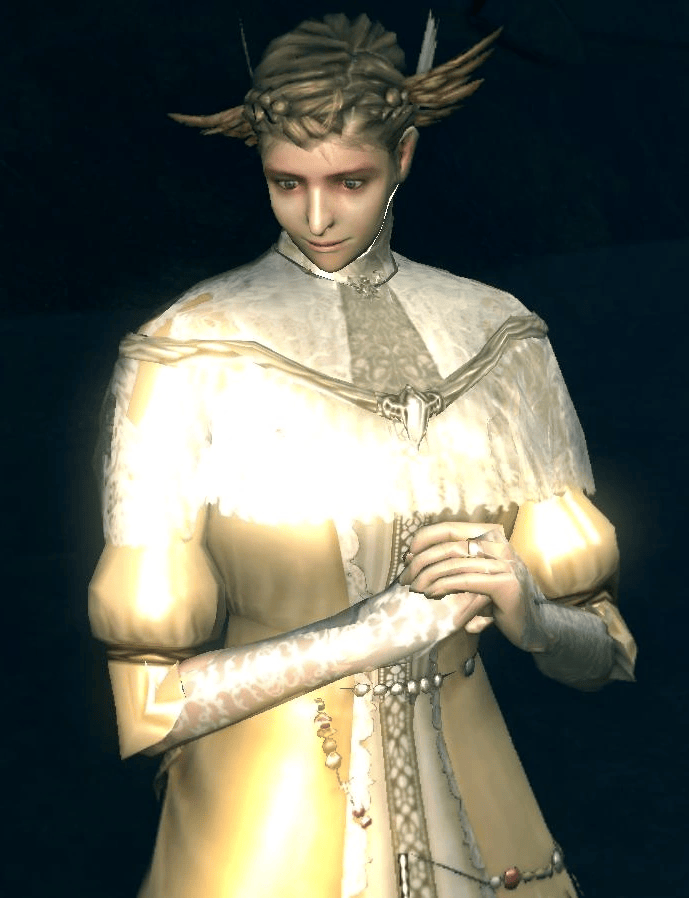
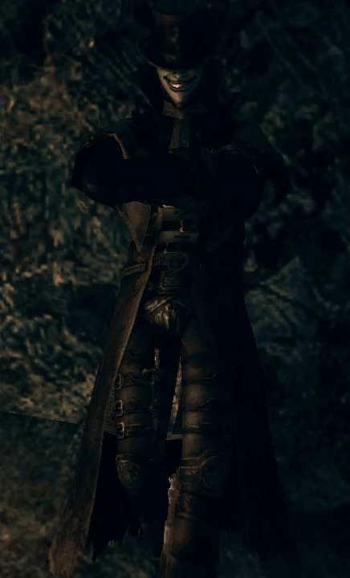

Andre de Astora
Profesion:Mercader y Herrero
Ubicacion:Parroquia de los no muertos
Salud:1,065
Almas:1,000
Suelta:Humanidad, Martillo de herrero, Emblema Artorias
Objetos que puede recibir:Ascua grande, Ascua muy grande, Ascua divina, Ascua divina muy grande, Ascua oscura
Descripcion
Es un herrero que probablemente será de gran valor para el jugador a lo largo de ambos juegos.
Lore
Andre proviene del reino de Astora, sin embargo, poco más se sabe acerca de él. Su diálogo sugiere que fue traicionado por alguien hace algún tiempo, aunque nunca se hace hincapié en esto. Al parecer conoce al Herrero gigante de Anor Londo, como lo demuestra cuando el Ser de la ceniza le muestra el Carbón de gigante.
Localizacion
Andre de Astora se encuentra en el piso inferior justo debajo de la hoguera de la Parroquia de los no muertos, entre el Jardín Tenebroso y la Fortaleza de Sen. Al intentar acceder a través del Jardín Tenebroso hay que tener cuidado con el Demonio de titanita que vigila la zona.
Trama
La mayor parte de las ascuas que el jugador encuentre le serán útiles a este herrero (Ascua grande, Ascua muy grande, Ascua divina, Ascua divina grande y Ascua oscura) con las que se podrá forjar armas en estado Básico, Divino y Oculto. Es el único herrero capaz de ascender armas de +5 a +6 y de +10 a +11. También vende algunos materiales de refuerzo básicos, así como muchas armas (algunas de las cuales son exclusivas de él). Por último, vende el Emblema de Artorias, el cual es requerido para abrir la puerta hacia el Bosque Tenebroso, una sección más peligrosa del Jardín Tenebroso.
Estrategia
Tiene un estilo de combate peculiar ya que no se ayuda de ningún tipo de arma, sino que utiliza sus puños de forma contundente y realiza una serie de patadas que pueden derribar al jugador incluso si lleva armadura pesada. Tiene una gran cantidad de salud.
Curiosidades
- Andre de Astora fue diseñado inicialmente para ser un descendiente directo o indirecto de Gwyn, lo cual puede ser confirmado por el parecido que mantiene con el mismo. Su función dentro del juego hubiese sido abrir el camino que conduce hacia el Horno de la Llama original donde se encuentra Gwyn. Pero al final se decidió que nada de esto sucediera y Andre pasara a ser un simple herrero.
- Aunque pase desapercibido, Andre es uno de los pocos personajes que mueven la boca al hablar con el jugador.
- El cuerpo de Andre no desaparece tras matarlo.
- Al hablar con Andre se puede aprender el gesto "¡Hurra!".
- Andre es uno de los personajes que vuelven a aparecer en Dark Souls III.

Anochecer de Oolacile
Ubicacion:Cuenca tenebrosa
Salud:276
Almas:1,000
Apariencia
Anochecer de Oolacile es una joven hechicera que presumiblemente pertenece a la nobleza y utiliza el Conjunto anticuado.
Lore
Anochecer es de la antigua y muerta tierra de Oolacile, donde se practicaban hechizos ajenos incluso para el reino mágico de Vinheim.
Localizacion
- Anochecer se encuentra atrapada dentro de un golem de cristal dorado en una área oculta en la parte posterior del lago en la Cuenca Tenebrosa. Después de derrotar a la Hidra habrá que recargar la zona para que aparezca el golem.
- Después de matar al golem, el jugador podrá invocar a Anochecer mediante una señal de invocación en la orilla del lago (donde el jugador enfrentó a la Hidra) junto a un árbol en frente de donde se encuentra el Conjunto de caballero. No es necesario revertir el estado Hueco para poder invocarla (su señal de invocación desaparece después de que el No muerto elegido obtiene el Colgante roto).
- Tras derrotar a Manus, Padre del Abismo en la Sima del Abismo, Anochecer aparecerá en la arena del jefe y el jugador podrá hablar con ella, aunque desaparecerá una vez que el jugador abandone el área. Su señal de invocación volverá como antes en la Cuenca Tenebrosa.
Trama
Anochecer es un personaje completamente opcional; ella vende al jugador hechizos de Oolacile como recompensa por rescatarla. Estos incluyen: Cuerpo oculto, Lanzar luz y Camaleón. Dependiendo del estilo de juego del jugador, puede valer la pena rescatarla. Si bien no es necesario interactuar con ella en cuanto a la trama principal del juego, es necesario si el jugador desea experimentar los eventos que tienen lugar en el DLC Artorias of the Abyss. Artorias of the Abyss La señal de invocación de Anochecer desaparece en la Cuenca Tenebrosa después de que el No muerto elegido obtiene el Colgante roto. Tras ser arrastrado a un vacío oscuro cercano y transportado a la tierra de Oolacile, el No muerto elegido descubre que Anochecer ha sido secuestrada por Manus, Padre del Abismo.
Notas
- Al responder "No" después de su presentación, el jugador ya no podrá invocarla durante esa partida.
- No se defenderá al ser atacada.
- No suelta nada y la Mano oscura no puede robarle Humanidad líquida.
- Si el jugador mata a Anochecer justo después de derrotar a Manus, Elizabeth también morirá.
Mercancias
Hechizos
Cuerpo oculto, coste:2.000 almas
Lanzar luz, coste:1.000 almas
Reparar, coste:10.000 almas
Camaleon, coste:3.000 almas
Arma oculta, coste:2.000 almas
Catalizadores
Catalizador marfil Oolacile, coste:1.000 almas

Chester
Ubicacion:Bosque real, Municipio de Oolacile
Salud:1.200
Almas:9.505
Suelta:Conjunto de Chester